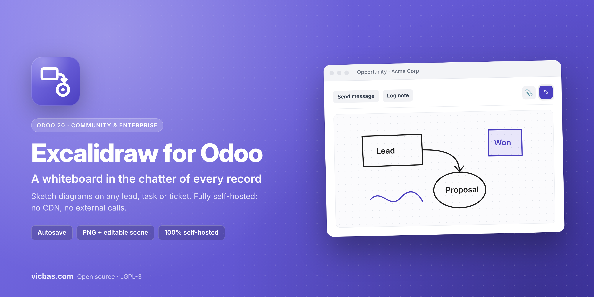

A whiteboard in the chatter of every record
Excalidraw for Odoo puts the hand-drawn-style whiteboard on every record. Press the pencil in the chatter, draw, and the drawing stays on the record: an editable scene plus a PNG everyone with access can see.
A pencil button next to the paperclip on any saved record opens the drawing picker and a fullscreen editor.
Each drawing is an editable .excalidraw scene plus a PNG render, stored as attachments on the record.
Saves after 45 s of inactivity, at most every 60 s, and when you close the editor.
The Excalidraw library (0.18.1, MIT) and its fonts ship inside the module. No data leaves your server.
Export to PNG or SVG and import .excalidraw files from the editor's own menu.
User and Manager groups control who can draw. Users draw on records they can write.
Questions, installation support and custom Odoo development.
contacto@vicbas.com vicbas.com© Victor Bastías Escobar · Licensed under LGPL-3